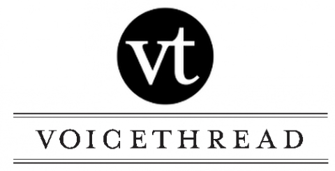

VoiceThread is an interactive collaboration and sharing cloud application that can be used to assist students in many purposes. VoiceThread is used by educational institutions both by faculty and students - and has been seamlessly integrated into many Learning Management Systems through use of "Learning Tools Interoperability" (LTI).
- Uses of VoiceThread Are
- Promotion of Learning Engagement & Motivation
- Research Purposes through Digital Library
- Image & Video Alterations
- Voice Over Tool for Video & Presentation Creation